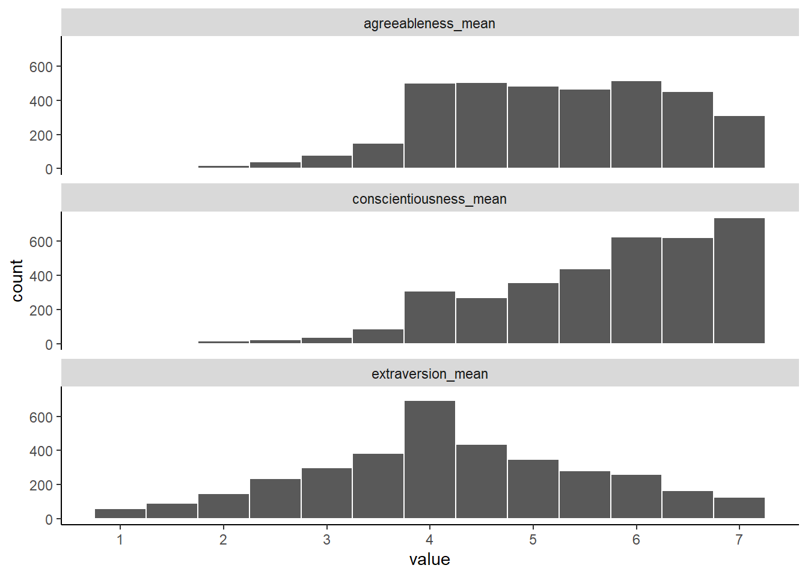

library(tidyverse)
library(anesr)
data(timeseries_2016)
my_data_complete <- timeseries_2016 |>
select(extraversion1 = "V162333",
extraversion2 = "V162338",
conscientiousness1 = "V162335",
conscientiousness2 = "V162340",
agreeableness1 = "V162334",
agreeableness2 = "V162339",
feeling_thermometer = "V161095") |>
filter(if_all(everything(), ~ . >= 0)) |>
mutate(extraversion2 = 8 - extraversion2,
conscientiousness2 = 8 - conscientiousness2,
agreeableness1 = 8 - agreeableness1,
extraversion_mean = rowMeans(across(contains("extraversion"))),
conscientiousness_mean = rowMeans(across(contains("conscientiousness"))),
agreeableness_mean = rowMeans(across(contains("agreeableness"))))Lab 7: Data cleaning & analysis
Goals
- Read the data you need into R
- Select required variables
- Filter the data based on completeness (and any other criteria)
- Compute any required variables (scale means, number of items missing, etc)
Data wrangling, description, and visualization
Data wrangling
Building on the correlation example, we will include additional variables of interest - conscientiousness and agreeableness - to examine how these factors, along with extraversion, collectively predict feelings towards the Democratic party. Similar to the correlation project, we will start by cleaning and filtering the data, recoding the negatively-worded items (taking care to note which ones need recoding; it’s not always the second question), and computing mean scores for each Big 5 trait.
Here is the pipeline to prepare the data:
Describing your variables
Just as in the previous lab, you’ll need to compute the mean and standard deviation for each of your variables. Use the same process, replacing the variable names with your new ones:
my_data_complete |>
pivot_longer(everything(),
names_to = "variable",
values_to = "value",
values_transform = as.numeric) |>
group_by(variable) |>
summarize(count_valid = n(),
mean = mean(value),
sd = sd(value))# A tibble: 10 × 4
variable count_valid mean sd
<chr> <int> <dbl> <dbl>
1 agreeableness1 3530 4.73 1.67
2 agreeableness2 3530 5.68 1.23
3 agreeableness_mean 3530 5.21 1.14
4 conscientiousness1 3530 5.99 1.16
5 conscientiousness2 3530 5.41 1.54
6 conscientiousness_mean 3530 5.70 1.12
7 extraversion1 3530 4.79 1.58
8 extraversion2 3530 3.65 1.77
9 extraversion_mean 3530 4.22 1.38
10 feeling_thermometer 3530 48.3 30.0 Visualizing the data
You can create histograms for each of your new variables, just like you did for extraversion. Since there are
theme_apa <- theme(
panel.background = element_blank(),
axis.line = element_line()
)my_data_complete |>
select(extraversion1:agreeableness2) |>
pivot_longer(everything(),
names_to = "variable",
values_to = "value",
values_transform = as.numeric) |>
ggplot(aes(x = value)) +
geom_histogram(binwidth = 1, color = "white") +
scale_x_continuous(breaks = 1:7) +
facet_wrap(~variable, nrow = 3) +
theme_apa
my_data_complete |>
select(contains("mean")) |>
pivot_longer(everything(),
names_to = "variable",
values_to = "value",
values_transform = as.numeric) |>
ggplot(aes(x = value)) +
geom_histogram(binwidth = 0.5, color = "white") +
scale_x_continuous(breaks = 1:7) +
facet_wrap(~variable, nrow = 3) +
theme_apa
The regression analysis
Simple linear regression
Now we’ll perform a multiple regression analysis. This allows us to examine the relationship between one dependent variable (in this case, feeling_thermometer) and several independent variables (extraversion_mean, conscientiousness_mean, and agreeableness_mean).
model <- lm(feeling_thermometer ~ extraversion_mean + conscientiousness_mean + agreeableness_mean, data = my_data_complete)
summary(model)
Call:
lm(formula = feeling_thermometer ~ extraversion_mean + conscientiousness_mean +
agreeableness_mean, data = my_data_complete)
Residuals:
Min 1Q Median 3Q Max
-54.523 -24.494 2.127 22.216 55.932
Coefficients:
Estimate Std. Error t value Pr(>|t|)
(Intercept) 51.218290 3.342704 15.322 < 2e-16 ***
extraversion_mean -0.006588 0.369615 -0.018 0.985780
conscientiousness_mean -1.633627 0.476950 -3.425 0.000621 ***
agreeableness_mean 1.234787 0.465963 2.650 0.008086 **
---
Signif. codes: 0 '***' 0.001 '**' 0.01 '*' 0.05 '.' 0.1 ' ' 1
Residual standard error: 29.96 on 3526 degrees of freedom
Multiple R-squared: 0.00422, Adjusted R-squared: 0.003373
F-statistic: 4.981 on 3 and 3526 DF, p-value: 0.001893The summary() function will output the results of your regression analysis. For each predictor, you’ll see an estimate of the relationship between that predictor and the outcome variable, controlling for the other predictors. For instance, if you have a predictor like ‘Age’, the Estimate for ‘Age’ would indicate how much the response variable changes on average with a one-unit increase in ‘Age’, holding all other predictors constant.
You’ll also see a t-value and a p-value for each predictor, which tell you whether each predictor is significantly related to the outcome variable, controlling for the other predictors.
The last part of the output gives the overall model fit. Multiple R-squared is the proportion of variance in the outcome variable that can be explained by the predictor variables, and Adjusted R-squared is a version of R-squared adjusted for the number of predictors.
Finally, the F-statistic and its corresponding p-value assess the overall significance of the model. If the p-value associated with this F-statistic is less than your significance level, you can reject the null hypothesis that all the regression coefficients are zero.
Visualizing a regression model
Finally, as you did in the correlation project, you’ll want to create a scatterplot to visualize the relationships between your predictors and the outcome variable. This will be more complex than in the correlation project, since you now have more variables to include.
Regression with interaction
When specifying a regression model which includes the interaction between two predictors, the only difference is that you separate the names of the predictor variables with a * rather than +.
model <- lm(feeling_thermometer ~ conscientiousness_mean * agreeableness_mean, data = my_data_complete)
summary(model)
Call:
lm(formula = feeling_thermometer ~ conscientiousness_mean * agreeableness_mean,
data = my_data_complete)
Residuals:
Min 1Q Median 3Q Max
-54.18 -24.45 1.88 21.91 56.72
Coefficients:
Estimate Std. Error t value Pr(>|t|)
(Intercept) 61.3864 11.6794 5.256 1.56e-07
conscientiousness_mean -3.4191 2.0280 -1.686 0.0919
agreeableness_mean -0.8155 2.3145 -0.352 0.7246
conscientiousness_mean:agreeableness_mean 0.3546 0.3920 0.905 0.3658
(Intercept) ***
conscientiousness_mean .
agreeableness_mean
conscientiousness_mean:agreeableness_mean
---
Signif. codes: 0 '***' 0.001 '**' 0.01 '*' 0.05 '.' 0.1 ' ' 1
Residual standard error: 29.96 on 3526 degrees of freedom
Multiple R-squared: 0.004451, Adjusted R-squared: 0.003604
F-statistic: 5.255 on 3 and 3526 DF, p-value: 0.001288If the interaction term is significant, it’s also important to conduct a post hoc analysis to probe the interaction. This often involves plotting the interaction or calculating the effect of one variable at different levels of the other variable, to get a clearer understanding of how the predictors interact to affect the outcome.
Keep in mind that interpreting interaction terms can be complex. It is crucial to consider the nature of your variables, the context of your research, and the practical significance of the interactions, not just the statistical significance.